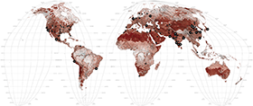
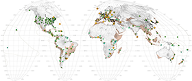

Seismic Activity
Atmospheric Currents

Ocean Currents
Biomes

Eco-Regions

Anthromes
Threatened Mammals
Protected Areas

Biological Hotspots

Biological Hotspots: Conservation Targets

Soils

Croplands

Meat Map

Land Degradation
The Tropics
Deforestation
Rivers & Wetlands

Health of Waters

Access to Water

Evolution of Urbanization: Pre-Modern Era

Evolution of Urbanization: Modern Era

Megastructures

Population Pressure

Energy
Nuclear Energy
Climate Change
Sea Level Rise

Environmental Displacement

Conflict & Corruption
Conflict & Displacement
Biodiversity Planning

Conservation Spending

Corporate Wealth

Environmental Performance

Landscape Intelligence

Genetic Stock

Religion
Eco-Regions + - 17%